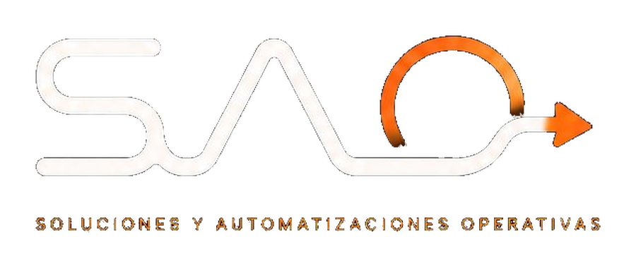

Negocios pequeños
Para ordenar agenda, clientes, inventario, ventas, pedidos y reportes simples.
Resolver como pyme SAO
SAO

Te guiamos con preguntas simples para identificar si necesitas una agenda, un control de ventas, un dashboard, una app interna, un flujo automático o una solución web para tus clientes.
La web te guía según tu tipo de negocio, el proceso que más tiempo consume y la forma en que trabajas hoy. Luego te muestra una recomendación inicial y una invitación directa al contacto.
Para ordenar agenda, clientes, inventario, ventas, pedidos y reportes simples.
Resolver como pymePara automatizar reportes, aprobaciones, consolidaciones, indicadores y seguimiento entre áreas.
Resolver internamentePara mejorar solicitudes, cotizaciones, formularios, portales y trazabilidad comercial.
Resolver atención externaTambién podemos iniciar por WhatsApp. Cuéntame qué tarea se repite, qué herramientas usas y qué te gustaría mejorar.
Contactar por WhatsApp